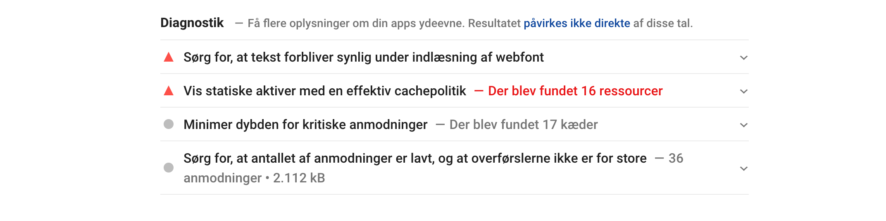

Brugertest
BERT
BERT-test resultat
Heuristiktest
Heuristiktest resultat
5-sec test
Hvad handler sitet om?
- Plankeborde
- genbrugs plankeborde
Hvad var det mest iøjenfaldende på siden?
Beskriv sitet med ét ord
- Plankebord
- Uprofessionelt
- Meget enkelt
- Gøre “genbrugstræ” mere tydeligt
- Varm i farverne
Lighthouse test mobil
Lighthouse test web
